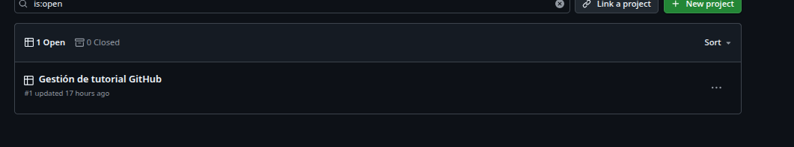
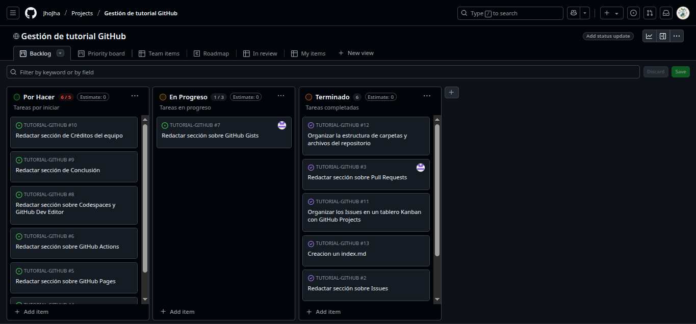

¿Qué es GitHub? GitHub es una plataforma en línea donde puedes guardar, compartir y colaborar en código con otras personas usando Git, que es un sistema de control de versiones. su importancia en el trabajo colaborativo GitHub es como una red social para programadores, pero con herramientas para: -Guardar proyectos en la nube (repositorios) -Trabajar en equipo -Reportar errores o mejoras (issues) -Proponer cambios (pull requests) cómo ha revolucionado el desarrollo de software GitHub ha tenido un impacto tremendo en la forma en que se desarrolla software. Aquí te explico cómo ha revolucionado el desarrollo:
Trabajar de manera colaborativa a través de pull requests, donde otros miembros del equipo revisan y sugieren cambios en el código.
Ver el código y hacer comentarios directamente en cada línea (lo que ayuda a resolver problemas y mejorar la calidad).
Gestionar proyectos de manera eficiente utilizando issues, milestones y proyectos.
Pueden trabajar en paralelo sin miedo a sobrescribir el trabajo de otros.
Volver atrás a una versión anterior del código si algo sale mal, haciendo más fácil experimentar y probar nuevas ideas sin riesgo.
Los errores se pueden rastrear y solucionar fácilmente, ya que todo está documentado.
Antes de GitHub, la gestión de versiones solo estaba disponible en sistemas complejos que no eran tan accesibles. GitHub hizo que el control de versiones fuera accesible para todos, incluso para personas sin mucha experiencia en el tema.
Los proyectos open source crecen de manera orgánica con contribuciones de desarrolladores de todo el mundo.
Cualquier persona puede revisar, aprender, y mejorar el código.
Facilita la creación de comunidades de desarrolladores que trabajan juntos por un propósito común.
Mejora la calidad del código porque cada contribución es evaluada y validada por otros miembros del equipo.
Permite que se detecten errores y problemas de rendimiento antes de que lleguen a producción.
Facilita la implementación de mejores prácticas y estándares de codificación dentro de los equipos.
Compartir información sobre cómo usar, instalar y contribuir a proyectos.
Mantener documentación actualizada junto al código fuente.
Seguir a otros desarrolladores, aprender de ellos y contribuir a sus proyectos.
Unirse a organizaciones y colaborar en proyectos grandes y complejos.
Participar en proyectos open source que impactan a toda la industria de software.
GitHub es como una red social para programadores, lo que crea una gran oportunidad de networking y colaboración.
Usados, mejorados y redistribuidos por cualquier persona, lo que acelera la innovación y la evolución tecnológica.
Contribuir a la creación de herramientas, librerías y frameworks de uso gratuito, beneficiando a millones de desarrolladores y empresas.
Explorar proyectos open source para aprender cómo se estructuran y cómo funcionan.
Seguir tutoriales y guías.
Colaborar en proyectos para adquirir experiencia y construir su portafolio.
GitHub tiene una gran comunidad de desarrolladores que se apoyan mutuamente, ayudando a que el aprendizaje sea más accesible.
Historia de GitHub GitHub es una plataforma en línea para el desarrollo de software colaborativo. Está basada en Git, un sistema de control de versiones creado por Linus Torvalds (el mismo creador de Linux).
Línea de tiempo: 2005: Git es creado por Linus Torvalds.
2008: GitHub es fundado por Tom Preston-Werner, Chris Wanstrath, P. J. Hyett y Scott Chacon.
2010s: GitHub se vuelve muy popular entre desarrolladores y empresas como una herramienta para compartir código y colaborar en proyectos.
2018: Microsoft compra GitHub por $7.5 mil millones de dólares.
Hoy: Es la plataforma de colaboración de código más usada del mundo, con más de 100 millones de desarrolladores.
Objetivos de GitHub
Colaboración en proyectos de software GitHub permite que muchos desarrolladores trabajen juntos en un mismo proyecto, desde cualquier lugar del mundo.
Control de versiones Guarda un historial completo de cambios en el código. Puedes volver atrás, comparar versiones y ver quién hizo qué cambio.
Compartir código Puedes publicar tu proyecto para que otros lo vean, lo usen o contribuyan (repositorios públicos) o mantenerlo privado.
Revisión y mejora del código Los equipos pueden usar pull requests y code reviews para revisar y mejorar el código antes de integrarlo.
Gestión de proyectos GitHub permite usar issues, boards (tableros tipo Kanban), wikis y más para organizar tareas y documentar el proyecto.
Automatización (CI/CD) GitHub Actions permite automatizar pruebas, despliegues, compilaciones y más.
Breve explicación de qué es GitHub y su importancia en el trabajo colaborativo.
¿Qué son los Issues?
Un Issue es una forma de reportar: errores (bugs), sugerencias de mejora,tareas por hacer,preguntas o problemas relacionados con el proyecto. Los Issues permiten que tú y tu equipo organicen el trabajo y se comuniquen dentro del repositorio. ¿Para qué sirven?
-Documentar errores o fallas detectadas. -Proponer mejoras o nuevas funcionalidades. -Asignar tareas a otros colaboradores. -Hacer seguimiento del progreso. -Discutir problemas con otros usuarios del proyecto. ¿Cómo crear un Issue?
-Entra al repositorio en GitHub. -accede al boton “Issues” en la parte superior. -accede al botón verde “New issue”. -Al acceder coloca Un título claro (por ejemplo: “Error al cargar la página principal”). -Una descripción detallada del problema, con pasos para reproducirlo si es necesario.De forma opcional Puedes utilizar: Labels (etiquetas como “bug”, “enhancement”, etc.). Milestone (si forma parte de una etapa del proyecto). Assignees (personas responsables del issue). Haz clic en “Submit new issue”. ¿Cómo asignar un Issue?
Después de crear el Issue: En el panel derecho del Issue, haz clic en “Assignees”. Selecciona el usuario de GitHub que será responsable. Necesitas permisos de colaborador o administrador para poder asignar a otros. ¿Cómo cerrar un Issue?
Un Issue se puede cerrar cuando: Se resuelve el problema o se completa la tarea. Ya no es relevante. Desde el repositorio:Abre el Issue. Haz clic en “Close issue”. desde el terminal se hace un commit que resuelve el Issue, puedes escribir algo como: git commit -m “Corrige bug de inicio de sesión. Fixes #12” Ejemplo de Issue. Escenario: Tienes un proyecto donde estás creando una lista de compras en un archivo de texto. El archivo tiene una lista de elementos y te das cuenta de que no se agrego un artículo. El procedimiento: Crear un issue: Vas a la sección de “Issues” en tu repositorio de GitHub. Haces clic en “New Issue” (Nuevo Issue). Pones el título del issue: “Agregar “mochila” a la lista de compras”. En la descripción, puedes escribir algo como: “No coloque “mochila” a la lista de compras. Debe añadirse al final de la lista.” Agregas la etiqueta: “documentacion” (ya que se trata de un cambio en la lista de compras que forma parte de la documentación del proyecto). De esta forma figuraria la Issues: Título: “Agregar ‘mochila’ a la lista de compras”
Descripción:
“no agregué ‘mochila’ a la lista de compras. Debe añadirse al final de la lista.”
Etiqueta: documentation
Un Pull Request (PR) en GitHub es una solicitud para fusionar cambios desde una rama (por ejemplo, tr) a otra (normalmente main o master) dentro de un repositorio. Es una herramienta clave en el desarrollo colaborativo de software.
como se crea el Pull Request
-Desde Git Bash, ya habiendo realizado los cambios en el archivo. git push origin tr -habiendo hecho el push accede al repositorio cambia a la rama que deses que se fusione con la rama main en este caso. -Haz clic en “Compare & pull request”. -Completa los detalles y haz clic en “Create pull request”.
cómo se revisa y se aprueba
¿Qué necesitas?
-Ser colaborador con permisos de escritura en el repositorio.
-Acceso al Pull Request abierto que quieres revisar.
Accede al repositorio en GitHub
Accede al boton Pull requests
Haz clic en el Pull Request que quieres revisar
Revisa los cambios
Aprobar el Pull Request
Selecciona la opción “Approve”.
(Opcional) Escribe un comentario de aprobación.
Haz clic en “Submit review”.
Haz clic en ese botón para fusionar los cambios con la rama principal (por ejemplo, main).
Luego, haz clic en “Confirm merge”.
Incluir buenas prácticas para revisiones de código.
Revisa con atención, no con apuro
Verifica que el cambio cumple su objetivo
Revisa estilo y format
Evalúa la estructura del código
Asegúrate de que el código tenga pruebas
Detecta posibles errores o riesgos ¿Hay código que podría fallar con ciertos datos?
Sugiere mejoras, no solo señalas problemas
Fomenta el aprendizaje
Revisa solo lo necesario Si un PR es demasiado grande, sugiere dividirlo.
GitHub Projects es una herramienta poderosa para gestionar tareas dentro de un repositorio usando tableros tipo Kanban. Permite organizar visualmente el progreso del equipo, planificar tareas, dar seguimiento a lo pendiente y mantener el enfoque en los objetivos del proyecto.
En este tutorial colaborativo, usamos GitHub Projects para organizar la creación de cada sección del contenido, asegurando que todos los temas fueran cubiertos de manera progresiva y coordinada. Creamos un tablero Kanban con tres columnas:


Explica qué es y un ejemplo sencillo (por ejemplo, acción que despliegue una web).
Cómo crear snippets de código públicos o privados.
Cómo publicar una web desde el repositorio.
Qué son, para qué sirven y ejemplos básicos.
El uso de GitHub no solo transforma la manera en que se gestiona el código, sino también la forma en que los equipos colaboran, se comunican y aprenden juntos. A lo largo de este tutorial, hemos explorado herramientas clave como Issues, Pull Requests, Projects, Gists, GitHub Pages y más. Cada una de estas funciones cumple un rol fundamental dentro del flujo de trabajo moderno en el desarrollo de software.
GitHub es mucho más que un simple repositorio de archivos:
Es una plataforma de colaboración global que fomenta la transparencia, la organización, la revisión constante del código y la mejora continua.
Entre los aprendizajes más importantes que este tutorial nos deja, destacamos:
Este conocimiento no solo es útil para trabajar en equipo, sino también para tu crecimiento profesional individual, ya que dominar GitHub es una habilidad esencial en cualquier área relacionada con la tecnología y el desarrollo.
“No se trata solo de escribir código, sino de construir soluciones juntos.”
Gracias por llegar hasta aquí.
Nombres completos, usuarios GitHub y aportes.